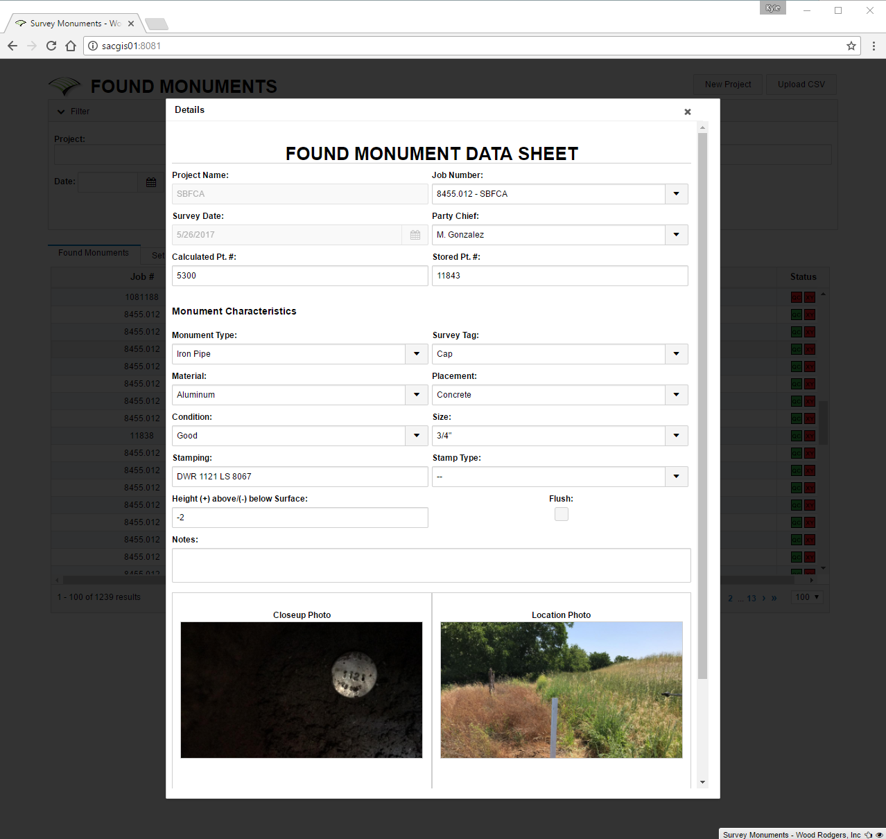
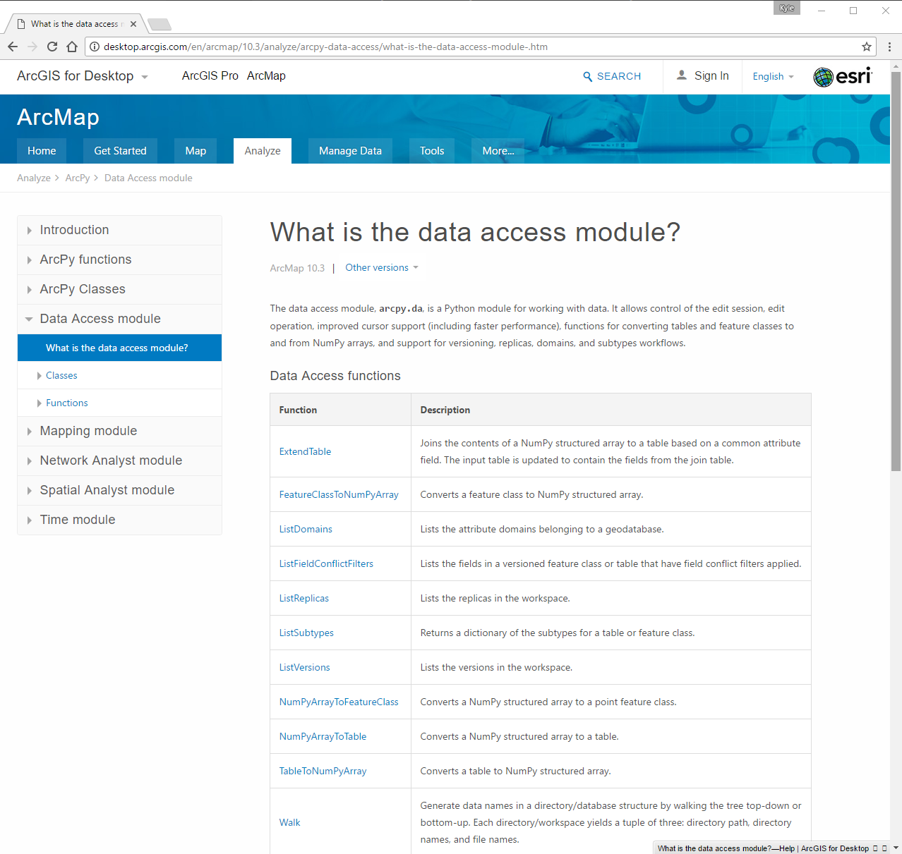

Automating Survey Workflows Across the Entire ArcGIS Platform
### Kyle Morgan <div class="small_details"> <span style="font-size: 0.8em;">GIS Developer @ <a href="http://www.woodrodgers.com" target="_new">Wood Rodgers, Inc.</a></span> <p></p> <small> <i class="fa fa-envelope" aria-hidden="true"></i> <a href="mailto:kmorgan@woodrodgers.com?subject=Esri UC 2017">kmorgan@woodrodgers.com</a> | <i class="fa fa-twitter-square" aria-hidden="true"></i> <a href="https://twitter.com/gisdev_km" target="_new">@gisdev_km</a> </small> </div>
## Some background
### Survey Dept
Distributed Survey Department<br> <small>(3 offices in 2 states and growing)</small>
Team consists of Field Crews and Office personnel
A need to streamline distribution of information immediately
### Typical project requirements
Official record of Survey
Photos of marker & surrounding area
Multiple format of deliverables
## Historical approach
### A typical day
Field notes are handed in and scanned by office personnel <span class="fragment fade-up" style="color: red; font-style: italic;">(sometimes days late)</span>
Scanned field notes are printed and shoved in a project binder <span class="fragment fade-up" style="color: red; font-style: italic;">(that may wander off)</span>
Office personnel try to keep track of attribute changes and revisions to field notes based on word of mouth
Photos are uploaded (usually painfully) to a sharing service (e.g. Box) or emailed from each mobile device to the Office PM
Office personnel download the photos to the appropriate project folder on the server by date
Photos are rotated and resized as needed
Any reports are generated using MS Word or Excel template
Data is converted to various deliverable formats (CAD or GIS)
When time to deliver, additional time is incurred to double check all work <span class="fragment fade-up" style="color: red; font-style: italic;">_(usually by hand)_</span>
## GIS approach
### Behind the curtains 1. Hardware 2. Software 3. Automation
### Hardware (Field) 1. Trimble RTK Units 2. Apple iPhone
### Software #### Field 1. Esri Collector for ArcGIS 2. Esri Survey123 ---- #### Office 1. Esri ArcGIS Desktop 2. Esri ArcGIS Pro 3. Custom Web Interface
### Automation #### Software 1. ArcGIS Online 2. ArcGIS for Server 3. ArcGIS For Portal 4. Python
### Automation #### Deliverables 1. Monument Sheet _(PDF with photos)_ 2. Overview Maps 3. Compiled PNEZD files 4. Esri File Geodatabase / Shapefiles 5. CAD Drawings
## Field Walkthrough
Field crew finds / sets monuments traditionally
Using Survey123, records the relevant information on their mobile device
Field crew syncs with ArcGIS Online when it is convenient for them
## Automation Walkthrough
An hourly scheduled tasks polls ArcGIS Online
Fresh data is downloaded and processed
E-mails are sent out to each survey project manager to review with links to each record.

When a record is reviewed and approved, Monument Sheet PDFs are created in the appropriate folder by date, server-side. _If a record is updated, the PDF is replaced with a new copy._
Coordinates from RTK unit are uploaded after post-processing by survey office lead.
## Automation Magic
### ArcGIS for Server's Python instance _Functionality is dependent on ArcGIS for Server license level_
### ArcGIS for Matrix Links * [ArcGIS Enterprise 10.5](http://www.esri.com/library/brochures/pdfs/arcgis-enterprise-functionality-matrix.pdf) * [ArcGIS for Server 10.4](http://www.esri.com/software/arcgis/arcgisserver/~/media/Files/Pdfs/library/brochures/pdfs/arcgis-server-functionality-matrix.pdf) <p class="center">_Google "ArcGIS Server [version] matrix"_</p>
### arcpy [Data Access Module](http://desktop.arcgis.com/en/arcmap/10.3/analyze/arcpy-data-access/what-is-the-data-access-module-.htm) <p class="center">_E.g. Search, Update, Insert Cursors_</p>

### arcpy [Mapping Module](http://desktop.arcgis.com/en/arcmap/10.3/analyze/arcpy-mapping/introduction-to-arcpy-mapping.htm) <p class="center">_MXD Template Interface_</p>
## 3rd Party Python Modules
### Requests <p class="center"><a href="http://docs.python-requests.org/" target="_new">http://docs.python-requests.org</a></p>
### Pillow <p class="center"><a href="https://python-pillow.org/" target="_new">https://python-pillow.org</a></p>
## Future Plans
Migrate from ArcGIS Online to on-premise
Integrate with other departments
## Bonus Content * ArcGIS for Portal Maps * Daily Summary Reports
### Kyle Morgan <div class="small_details"> <span style="font-size: 0.8em;">GIS Developer @ <a href="http://www.woodrodgers.com" target="_new">Wood Rodgers, Inc.</a></span> <p></p> <small> <i class="fa fa-envelope" aria-hidden="true"></i> <a href="mailto:kmorgan@woodrodgers.com?subject=Esri UC 2017">kmorgan@woodrodgers.com</a> | <i class="fa fa-twitter-square" aria-hidden="true"></i> <a href="https://twitter.com/gisdev_km" target="_new">@gisdev_km</a> </small> </div>